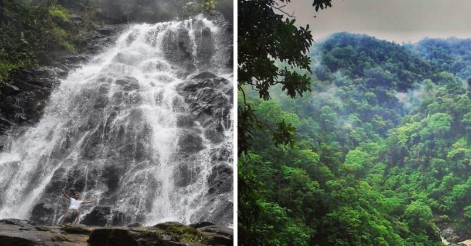
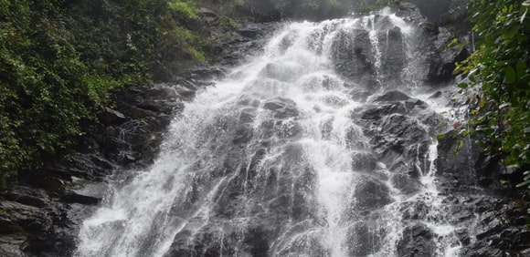

Kuli Magod Waterfalls-Karnataka
Kuli Magod Waterfalls, An Unexplored Gem in Uttara Kannada District Is Surely A Must Visit Place

Uttara Kannada district has several picturesque waterfalls and some of them are popular tourist destinations too.
Therefore, Magod Falls is one such waterfall that has caught the imagination of people.
It is formed by the east-flowing Bedti river. However, among all the attractions near Magod Falls, the Kuli Magod Falls stands out for its sheer beauty and accessibility.
Kuli Magod falls is situated between Magod and Jenukallu Gudda.
It's not a very famous waterfall.
However, if you are visiting Magod falls and Jenukallu Gudda, this place is a must go.
It is formed by a tiny tributary of Bedti and its relatively easy to access.
Beautiful Kuli Magod waterfall deep inside the jungle
Normally, it takes a great amount of trekking down the valley for one to reach the foot of any waterfall.
This is not the case with Kuli Magod. With very little effort, one can get under its misty showers falling down from a height of about 50 feet.
To get there, one has to take Magod road from Yellapur and take a left turn just before Magod Falls.
There is a signboard at this turning, which directs to the Kuli Magod Falls.
The final half kilometer to the waterfalls needs to trek as the forest path is dense. Monsoon is the best season to visit this enchanting waterfall.
The nearest railway station is the Yellapur Railway Station. You need to depend on private vehicles to reach the falls from the station.
Magod has a well-connected road network.
It is at a distance of 520 km from Bangalore, 205 km from Goa, 90 km from Hubli, 80 km from Karwar and 19 km from Yellapur.
Kuli Magod Waterfalls Key Facts
Trek,Waterfall
50 feet
Bedti River
July to October
Magod, Uttara Kannada, Karnataka, India
